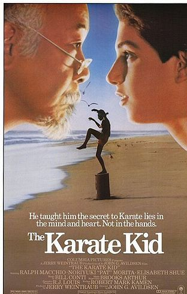

The Karate Kid (bra: Karatê Kid - A Hora da Verdade) é um filme de artes marciais e drama romântico norte-americano de 1984 do diretor John G. Avildsen e escrito por Robert Mark Kamen, estrelado por Ralph Macchio e Noriyuki "Pat" Morita e Elisabeth Shue. É uma história underdog no molde de um sucesso anterior de Avildsen de 1976, o filme Rocky. O filme conta a história de um jovem lutador que deseja aprender caratê, e para isso convence um experiente mestre a lhe dar aulas, que acabam por transformar-se em lições de vida.
Por esse filme, Pat Morita recebeu uma indicação de melhor ator coadjuvante no Óscar daquele ano e também uma indicação na mesma categoria ao Globo de Ouro.
Sinopse
O jovem Daniel Larusso(Ralph Macchio) e sua mãe (Randee Heller) recentemente se mudaram de Newark, Nova Jérsey para a região do Vale de São Fernando no sul da Califórnia. Porém, Daniel não consegue se ambientar em sua nova morada, até que conhece Ali Mills (Elisabeth Shue), uma garota atraente que gosta dele.
Porém, a situação de Daniel se complica quando o ex-namorado de Ali, Johnny Lawrence (William Zabka), e seus amigos começam a atormentá-lo. Um dia, quando é cercado pelos amigos de Johnny, ele é salvo por Kesuke Miyagi (Pat Morita), um velho mestre de caratê. Disposto a ajudar Daniel, Miyagi resolve passar-lhe os ensinamentos de sua arte marcial, para que ele possa se defender dos amigos de Johnny, que também lutam caratê. Então ele enfrenta os seus adversários em uma competição de luta.
O filme é famoso por mostrar o ensaio de artes marciais por Daniel San por meio de atividades cotidianas do dia a dia, como limpar o carro ou pintar uma parede.